10 Exploratory Data Analysis and Tidying Data
10.1 Introduction
This sections covers two slightly different topics, but they will be helpful in your project.
Exploratory data analysis (EDA) is used by statisticians and data scientists to investigate data sets and summarize their main characteristics, often using data visualizations. A lot of the tools you saw in Sections 8 and 9 will be useful. You will learn more about the way to use these skills to perform EDA. This subsection is heavily based on R for Data Science (Wickham, Cetinkaya-Rundel, and Grolemun 2023), Chapter 10.
Data tidying is an approach to make the raw data that we get into a “nice” format which makes performing EDA and modeling much easier. This subsection is heavily based on R for Data Science (Wickham, Cetinkaya-Rundel, and Grolemun 2023), Chapter 5.
10.2 EDA
EDA can be viewed as a (fairly) systematic and iterative process, but it should not be viewed as a formal process with a strict set of rules. These steps are typically taken:
- Generate questions that you want to answer with the data.
- Generate data visualizations and / or numerical summaries to address these questions.
- Use what you learned to refine the questions, or generate new questions.
At the beginning, you should feel free to explore your ideas. Not all the ideas will pan out; but you will eventually hone in on some interesting insights.
EDA can also be used to check the quality of your data.
Generally speaking, the main questions that are asked during EDA are
- What type of variation occurs within the variables?
- What kind of relationship exists between the variables?
Domain-specific knowledge will be helpful in this process. Statisticians and data scientists often learn about the domain associated with the data set. You should never work on data where you have little domain-specific knowledge!
Note that modeling is rarely done during EDA. We are just creating visualizations and computing numerical summaries, and these should be done prior to modeling.
10.2.1 Variation Within Variables
Variance measures the spread associated with a quantitative variable. The a particular variable is constant, there is no variance, as it always takes on the same value. When we have a quantitative variable, we can use tools from Section 8.6.2, such as density plots, boxplots, and histograms.
We take a look at the diamonds data set from the tidyverse package. It contains the prices and other attributes of almost 54,000 diamonds. We wish to explore that weight of the diamonds, carat, as it is a characteristic that buyers are most familiar with.
ggplot(Data, aes(x = carat)) +
geom_histogram(binwidth = 0.5) +
labs(
x = "Carat",
y = "Count",
title = "Histogram of Diamond Carats"
)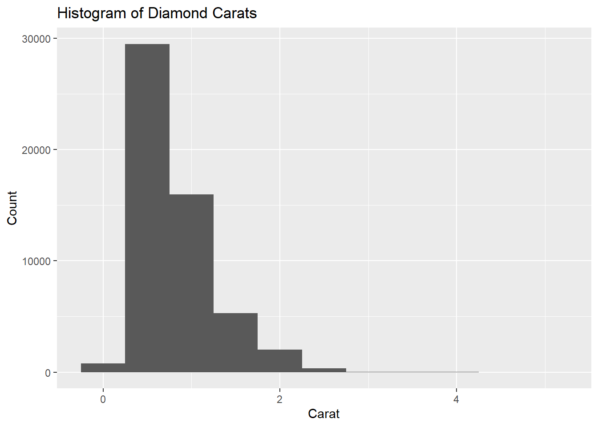
Figure 10.1: Diamond Carats are Right Skewed
Typical questions are (and the answers based on Figure 10.1):
What are the more common values? The bars appear highest around 0.5 to 1.5 carats, so these carats are common. Carats are concentrated among the smaller carats.
What values are rare? High carat diamonds are rare. Heavier diamonds are rare and therefore fetch a premium. This is to be expected.
Are there unusual patterns? Not really, as we expect more diamonds to be on the smaller end of the scale. The bar for the smallest carats being so low may be surprising.
Given that most diamonds are less than 3 carats, we can create a similar histogram, but only for diamonds less than 3 carats. We can also refine the width of the bins to examine the distribution of the carats more closely. You must make it clear that you are only examining a certain portion of the data.
smaller <- Data |>
filter(carat < 3)
ggplot(smaller, aes(x = carat)) +
geom_histogram(binwidth = 0.01) +
labs(
x = "Carat",
y = "Count",
title = "Histogram of Diamond Carats (less than 3 carats)"
)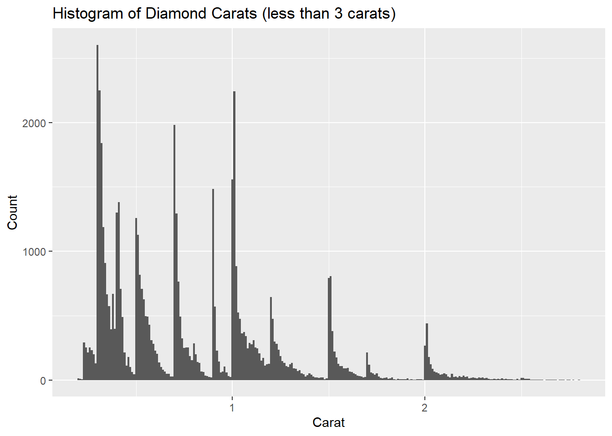
Figure 10.2: Histogram with Big Diamonds Removed
Notice that there are more diamonds with full or half carat sizes? According to Hamilton Jewelers, “this is done to create more precise measurements and because the price of a diamond will jump at each half and full carat”. So this observation is as expected.
10.2.1.1 Unusual values
Use the visualizations created during EDA to help spot unusual values. Sometimes these are data entry errors, sometimes they are correct values that can happen, and sometimes there is something interesting about these values that warrant further investigation.
We take a look at the y variable in the diamonds data set, which measures the width of the diamonds in mm.
ggplot(Data, aes(x = y)) +
geom_histogram(binwidth = 0.5) +
labs(
x = "Width in mm",
y = "Count",
title = "Histogram of Diamond Widths"
)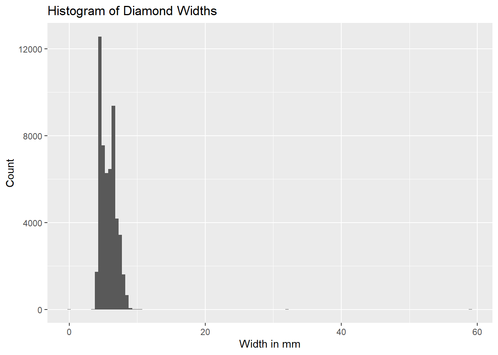
Figure 10.3: Width of Diamonds in mm
From Figure 10.3, most diamonds have widths between 5 to 10mm. The fact that the histogram has an x-axis ranging from 0 to 60mm informs us that there exist diamonds with widths in the extremes. You can “zoom-in” on the plot by limiting the limit on the y-axis by supplying the range of the y-axis via ylim inside the layer coord_cartesian. You can also limit the range of the x-axis if needed.
ggplot(diamonds, aes(x = y)) +
geom_histogram(binwidth = 0.5) +
coord_cartesian(ylim = c(0, 50))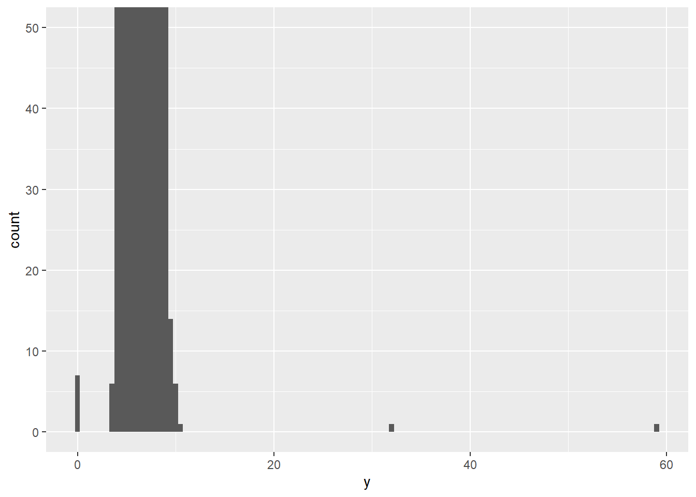
Figure 10.4: Zooming in by Changing Limits of Y Axis
From Figure 10.4, we see around 7 diamonds with width of 0mm, and 1 around 30mm and 1 around 59mm. The latter two diamonds could be legitimate, but there cannot be diamonds with width 0mm. Are there really diamonds with width recorded 0? To confirm, we can arrange the data frame by width,
## # A tibble: 53,940 × 10
## y carat cut color clarity depth table price x z
## <dbl> <dbl> <ord> <ord> <ord> <dbl> <dbl> <int> <dbl> <dbl>
## 1 0 1 Very Good H VS2 63.3 53 5139 0 0
## 2 0 1.14 Fair G VS1 57.5 67 6381 0 0
## 3 0 1.56 Ideal G VS2 62.2 54 12800 0 0
## 4 0 1.2 Premium D VVS1 62.1 59 15686 0 0
## 5 0 2.25 Premium H SI2 62.8 59 18034 0 0
## 6 0 0.71 Good F SI2 64.1 60 2130 0 0
## 7 0 0.71 Good F SI2 64.1 60 2130 0 0
## 8 3.68 0.2 Premium D VS2 62.3 60 367 3.73 2.31
## 9 3.71 0.2 Premium F VS2 62.6 59 367 3.73 2.33
## 10 3.71 0.2 Very Good E VS2 63.4 59 367 3.74 2.36
## # ℹ 53,930 more rowsor use the summary() function to check the minimum value of the widths.
summary(Data$y)## Min. 1st Qu. Median Mean 3rd Qu. Max.
## 0.000 4.720 5.710 5.735 6.540 58.900Even though we are not diamond experts, common sense tells us that no diamond can have a width of 0mm. Given that the values were entered using 2 decimal places, these are also unlikely to be values that were rounded down to 0mm. I suspect the 0s were entered to represent missing values, and so we will probably want to replace these 0s with NA. You should always confirm this with the entity that collected these data.
How about the 2 wide diamonds? If they are truly that huge, we’d expect them to be expensive. We can sort the data set by width (descending order) and also look at the prices of these diamonds:
## # A tibble: 53,940 × 10
## x y z price carat cut color clarity depth table
## <dbl> <dbl> <dbl> <int> <dbl> <ord> <ord> <ord> <dbl> <dbl>
## 1 8.09 58.9 8.06 12210 2 Premium H SI2 58.9 57
## 2 5.15 31.8 5.12 2075 0.51 Ideal E VS1 61.8 55
## 3 10.7 10.5 6.98 18018 5.01 Fair J I1 65.5 59
## 4 10.2 10.2 6.72 18531 4.5 Fair J I1 65.8 58
## 5 10.1 10.1 6.17 15223 4.01 Premium I I1 61 61
## 6 10.0 9.94 6.24 15223 4.01 Premium J I1 62.5 62
## 7 10.0 9.94 6.31 15984 4 Very Good I I1 63.3 58
## 8 10 9.85 6.43 17329 4.13 Fair H I1 64.8 61
## 9 9.86 9.81 6.13 16193 3.67 Premium I I1 62.4 56
## 10 9.66 9.63 6.03 18701 3.51 Premium J VS2 62.5 59
## # ℹ 53,930 more rowsWe expect that prices are driven by the weight (carat), which in turn is driven by the dimensions of the diamonds. We can take a look at the summary of prices:
summary(Data$price)## Min. 1st Qu. Median Mean 3rd Qu. Max.
## 326 950 2401 3933 5324 18823The price of the diamond with width 31.8mm is below the median. The price of the other diamond is above the 3rd quartile. The former is more suspicious, but the latter may be more legitimate. If possible, consult the entity that collected the data or consult a subject-matter expert to ask if such values could be legitimate.
My recommendation will be to perform subsequent analysis with and without these two diamonds, and see how different the analysis is. If the results are similar, omit them but mention that they were omitted. If the results are different, you really need to find out what makes these values so different.
As mentioned earlier, I would replace the 0s with NA. Do not remove the entire row, as the row contains information on other columns.
10.2.2 Relationship between Variables
10.2.2.1 One quantitative and one categorical variable
We can use the visualizations from 8.4 to explore the relationship between a quantitative variable and a categorical variable. To explore the relationship between the price and cut of diamonds, we can create a density plot of price with separate colors for each cut:
ggplot(Data, aes(x = price, color = cut)) +
geom_density() +
labs(
x = "Price",
y = "Density",
color = "Cut",
title = "Density Plot of Prices across Cut"
)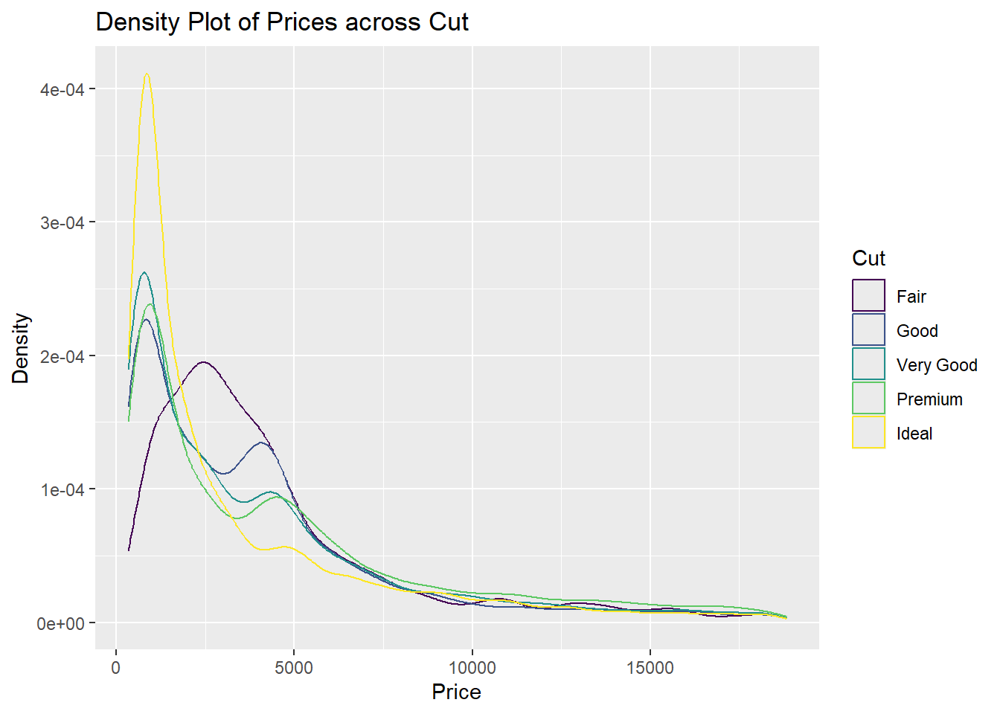
Figure 10.5: Prices Across Cuts are Right Skewed
Notice in this example the categorical variable cut is ordinal, there is an order to the values. Cut reflects a measure of quality, in increasing order from fair, good, very good, premium, ideal. You have to make sure that they are ordered correctly (which they are in this data set). If they are not, please see Section 8.6.1 to see how to use the factor() function to order the variable.
If prices are similar across each cut, these density curves should be similar to each other for all cuts. However, we see in Figure 10.5 that the curve for fair cuts appear to be quite different: its prices tend to be a little higher, which may be counter intuitive as fair is the lowest quality.
Alternatively, we can create a side by side box plot
ggplot(Data, aes(x = cut, y = price)) +
geom_boxplot() +
labs(
x = "Cut",
y = "Price",
title = "Boxplot of Prices across Cut"
)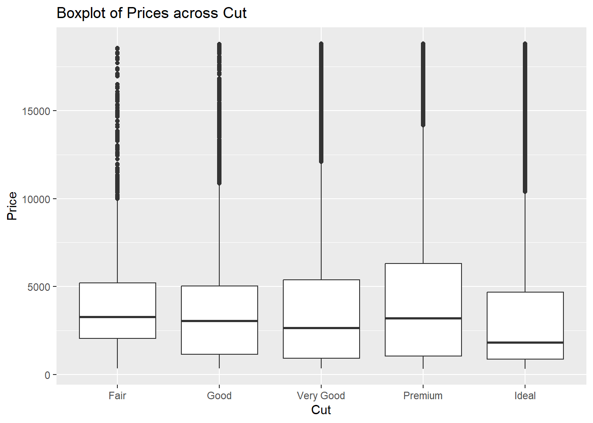
Figure 10.6: Prices Across Cuts
We see a similar conclusion in Figure 10.6 that diamonds with fair cut may have slightly higher prices.
Notice that the prices across cuts are right skewed? Most prices are on the lower end, and a few prices are really high. Sometimes, log transforming a right skewed variable helps the visualization.
ggplot(Data, aes(x = logPrice, color = cut)) +
geom_density() +
labs(
x = "Log Price",
y = "Density",
color = "Cut",
title = "Density Plot of Log Prices across Cut"
)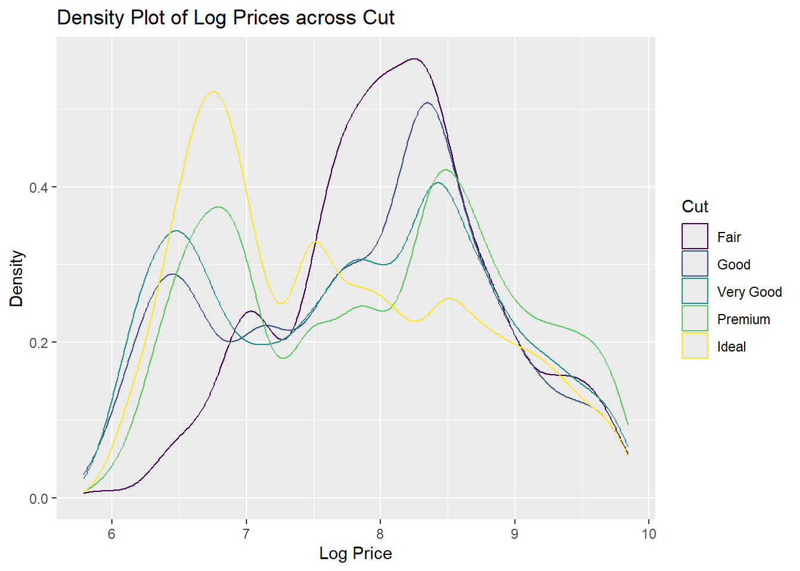
Figure 10.7: Density Plot with Log Transformed Prices Across Cut
ggplot(Data, aes(x = cut, y = logPrice)) +
geom_boxplot() +
labs(
x = "Cut",
y = "Log Price",
title = "Boxplot of Log Prices across Cut"
)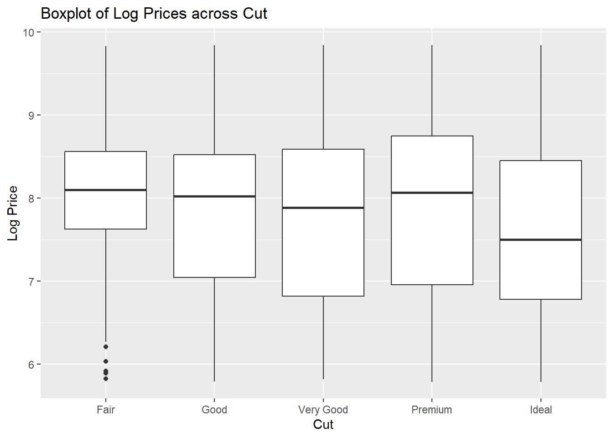
Figure 10.8: Boxplot with Log Transformed Prices Across Cut
It appears from Figures 10.7 and 10.8 that cut has the opposite relationship with price than expected. What are some plausible reasons for this observation?
10.2.2.2 Two categorical variables
We can use the tools from 8.3 to explore the relationship between two categorical variables. For example, we want to explore if cut and color of diamonds are related. We can create a visual that summarizes the number of diamonds for each combination of cut and color:
ggplot(Data, aes(x = cut, y = color)) +
geom_count()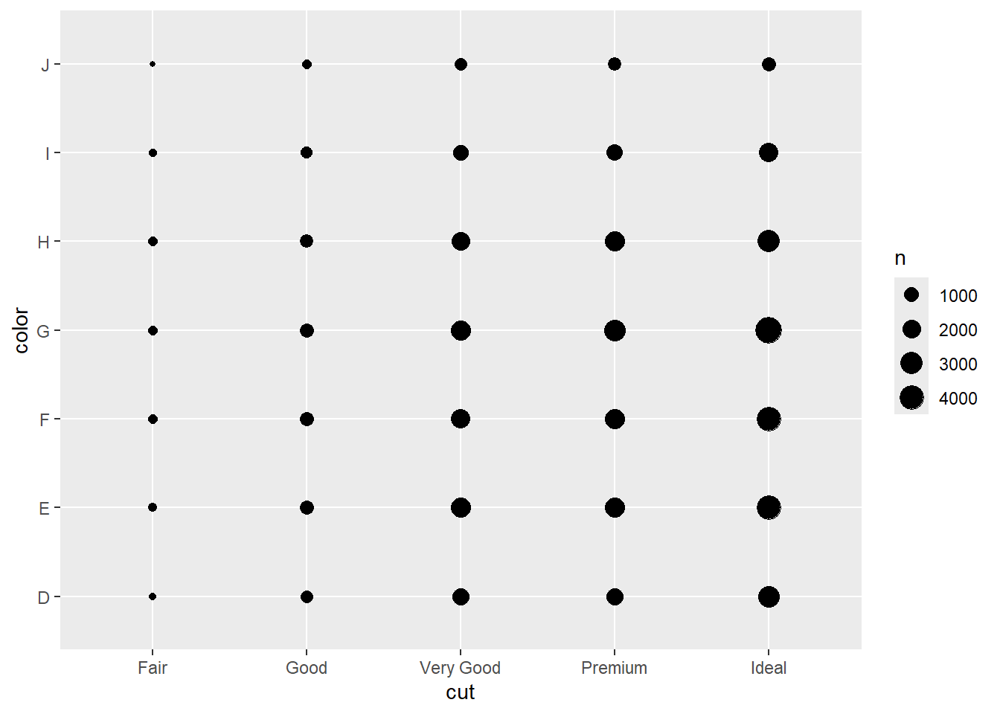
Figure 10.9: Counts of Color and Cut
Large circles indicate the specific combination of cut and color that are more prevalent and more likely to occur together. We see in Figure 10.9 that ideal cut with color G has the most occurrence, but it may be better to look at proportions instead of counts. We can use a bar chart:
ggplot(Data, aes(x = cut, fill = color)) +
geom_bar(position = "fill") +
labs(title = "Proportion of Colors in Each Cut", y = "Proportion")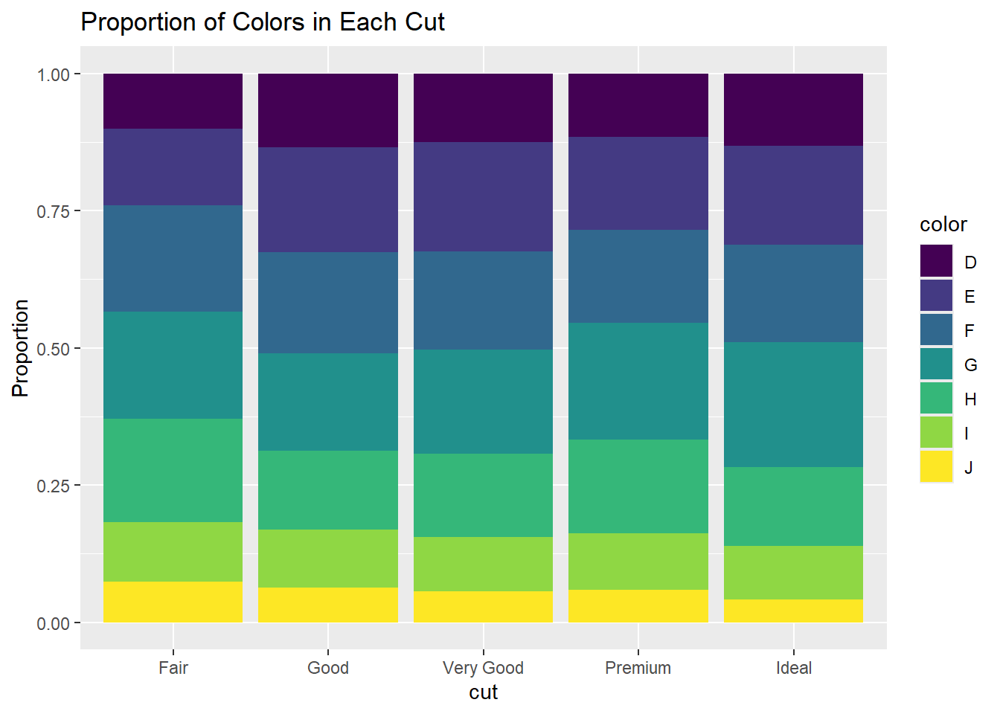
Figure 10.10: Bar Chart of Proportion of Colors in Each Cut
In Figure 10.10, the proportions of colors in each cut, while not identical, are pretty similar. So there is little evidence that color and cut are associated. We can create a two-way table:
table(Data$cut, Data$color)##
## D E F G H I J
## Fair 163 224 312 314 303 175 119
## Good 662 933 909 871 702 522 307
## Very Good 1513 2400 2164 2299 1824 1204 678
## Premium 1603 2337 2331 2924 2360 1428 808
## Ideal 2834 3903 3826 4884 3115 2093 896Or a two-way table using proportions, due to the different number of diamonds in each cut:
round(prop.table(table(Data$cut, Data$color), margin = 1), 2)##
## D E F G H I J
## Fair 0.10 0.14 0.19 0.20 0.19 0.11 0.07
## Good 0.13 0.19 0.19 0.18 0.14 0.11 0.06
## Very Good 0.13 0.20 0.18 0.19 0.15 0.10 0.06
## Premium 0.12 0.17 0.17 0.21 0.17 0.10 0.06
## Ideal 0.13 0.18 0.18 0.23 0.14 0.10 0.04For each cut, the proportion of each color is similar, so there is little evidence of an association between cut and color.
10.2.2.3 Two quantitative variables
Scatterplots are often used to explore the relationship between two quantitative variables. To explore how price is related to carat:
ggplot(Data, aes(x = carat, y = price)) +
geom_point() +
labs(title = "Price Vs Carat of Diamonds",
x = "Carat", y = "Price")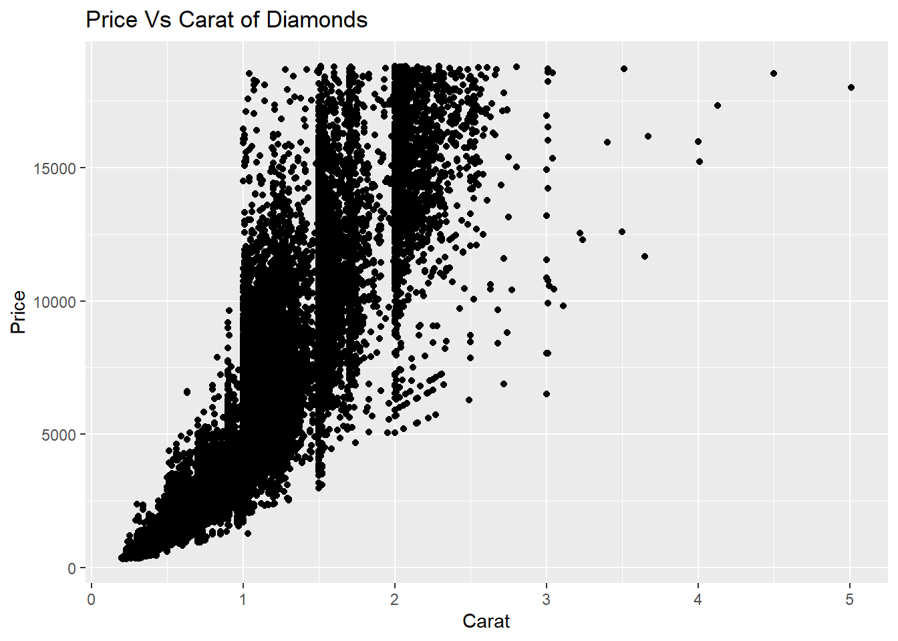
Figure 10.11: Scatterplot of Price Against Carat
Typical questions for scatterplots include (and answers based on Figure 10.11):
Is the relationship linear or not? In this case, the relationship in non linear.
Does the response variable generally increases as the predictor increases? In this example, generally yes, as the carat increases, price tends to increase.
How strong in the relationship? Imagine overlaying a line (if linear) or curve over the plots. How close do the plots fall to the line or curve? The closer they lie, the stronger the relationship. For smaller diamonds the prices are clustered together, but less so for larger diamonds. So the relationship is stronger for smaller diamonds.
An idea with visualizing quantitative variables is to bin them, i.e. create a categorical variable base on range of values on a quantitative variable, and then use visualizations involving one quantitative variable and one categorical variable.
ggplot(Data, aes(x = carat, y = price)) +
geom_boxplot(aes(group = cut_width(carat, 0.1)))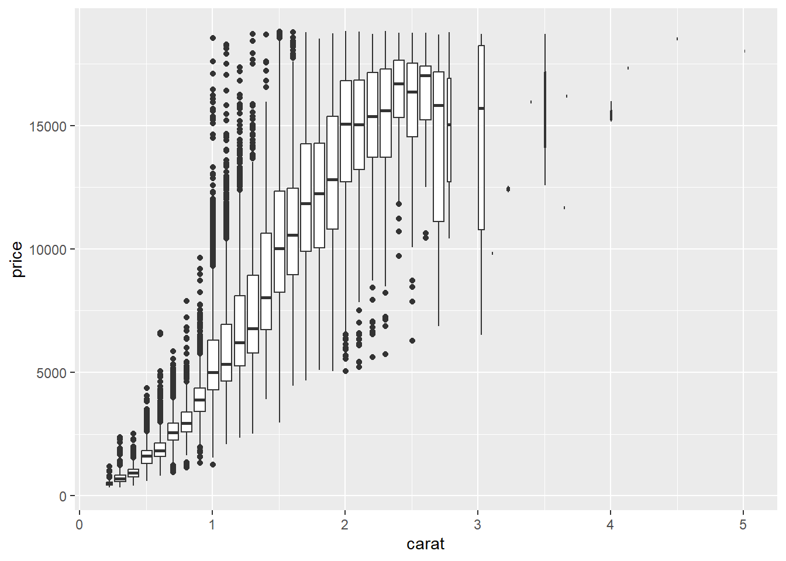
Figure 10.12: Boxplots of Price Against Binned Carat
cut_width(carat, 0.1) creates boxplots for each group of carats into bins with width 0.1. The interpretations are pretty similar to the scatterplot.
Another tool to assess the strength of the linear relationship is the correlation, via cor(). Note that correlation should only be used if the relationship is linear, and not when the relationship is nonlinear.
10.2.3 A Few Things to Consider
If you notice some patterns or relationships in the data, you can ask:
- Is this pattern coincidence?
- How can you describe the relationship?
- How strong is the relationship?
- What other variables might affect the relationship?
- Could the relationship change if you look at subgroups of the data?
10.2.4 Tips for Effective Visualizations
- Provide a title.
- Label axes, avoid using the name of the column. Readers may not have looked at your data frame.
- Right visualization for variable type (categorical, quantitative). Sometimes, an error message is shown and one reason could be the visualization does not work for the type of variable.
- Scaling of axes. Pay attention to the range of the axes and they do not mislead.
- Clear and simple. Avoid unnecessary styling or decorations. The visual needs to convey your key message. Do not cram too many variables. In my opinion, going beyond 3 or 4 becomes questionable. Using
facet_wrapcan be helpful. - Know your audience. Simplify for non-experts.
10.3 Tidy Data
You may have notice that in Sections 8 and 9, data frames were called tibbles. A tibble is the tidyverse version of a data frame. Data sets from the tidyverse are tibbles. The main difference is that when typing out the name of a tibble, only the first few rows and columns are printed, whereas all rows of a data frame get printed. Therefore, tibbles are nicer when working with large data sets.
Tidy data have the following characteristics:
- Each variable is a column; each column is a variable.
- Each observation is a row; each row is an observation.
- Each value is a cell; each cell is a single value.
The packages in the tidyverse work best with tidy data (as do most other packages). So why may data not be tidy?
The data are organized for another purpose, usually for ease of data entry rather than data analysis.
Most people are not familiar with the principles of tidy data, and it is difficult to derive them yourself unless you spend a lot of time working with data.
Please read R for Data Science (Wickham, Cetinkaya-Rundel, and Grolemun 2023), Chapter 5. There are two main classes of non tidy data, and so we lengthen or widen the data. Some of you may have to do these in your project, while most will not.